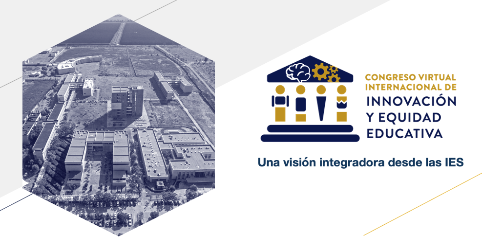
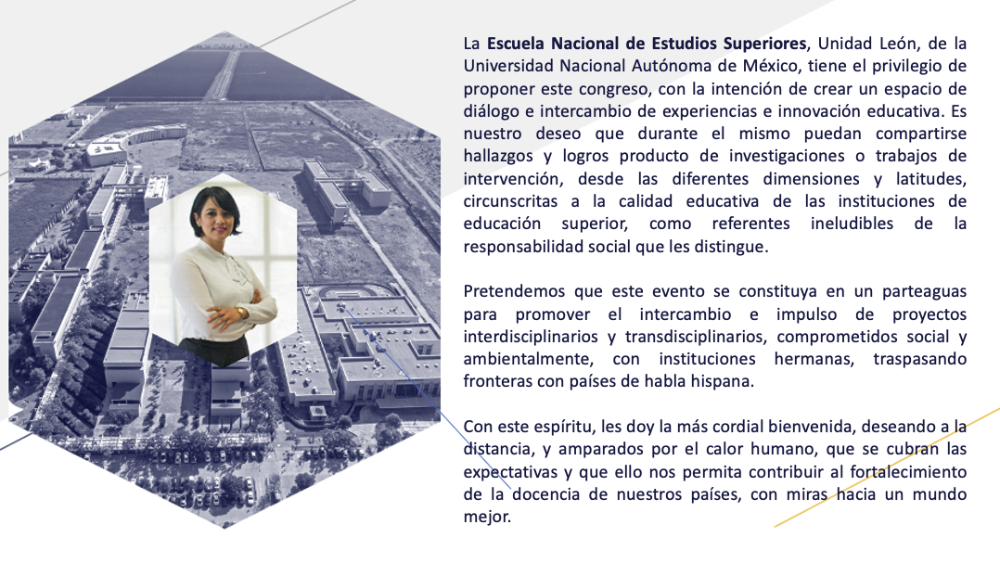

<main>
    <div class="position-relative">
      <!-- Hero for FREE version -->
      <section class="section section-lg section-hero section-shaped">
        <!-- Background circles -->
        <div class="shape shape-style-1 shape-unam-azul">
          <span class="span-150"></span>
          <span class="span-50"></span>
          <span class="span-50"></span>
          <span class="span-75"></span>
          <span class="span-100"></span>
          <span class="span-75"></span>
          <span class="span-50"></span>
          <span class="span-100"></span>
          <span class="span-50"></span>
          <span class="span-100"></span>
        </div>
        <div class="container shape-container d-flex align-items-center py-lg">
          
          <div class="col px-0">
            <div class="row align-items-center justify-content-center">
              <div class="col-lg-8">
                <h1 class="display-3 text-unam-oro">ENES Unidad León, UNAM
                  <span>Congreso Virtual Internacional de Innovación y Equidad Educativa</span>
                </h1>
              </div>
              <br>
            </div>

            
              <!-- img ppal -->
              <div class="row align-items-center justify-content-center">
                <div class="col-lg-4">
                  
                </div>

                <div class="col-lg-8 text-white">
                  <p>La <span><strong> Escuela Nacional de Estudios Superiores</strong></span>, Unidad León, de la Universidad Nacional Autónoma de México, tiene el privilegio de proponer este congreso, con la intención de crear un espacio de diálogo e intercambio de experiencias e innovación educativa. Es nuestro deseo que durante el mismo puedan compartirse hallazgos y logros producto de investigaciones o trabajos de intervención, desde las diferentes dimensiones y latitudes, circunscritas a la calidad educativa de las instituciones de educación superior, como referentes ineludibles de la responsabilidad social que les distingue. </p>
                  <p>Pretendemos que este evento se constituya en un parteaguas para promover el intercambio e impulso de proyectos interdisciplinarios y transdisciplinarios, comprometidos social y ambientalmente, con instituciones hermanas, traspasando fronteras con países de habla hispana.</p>
                  <p>Con este espíritu, les doy la más cordial bienvenida, deseando a la distancia, y amparados por el calor humano, que se cubran las expectativas y que ello nos permita contribuir al fortalecimiento de la docencia de nuestros países, con miras hacia un mundo mejor</p>
                </div>

                <br><br>

                
              </div>
                <!--  -->
                <!--  -->
              <!-- </div> -->
              <br>
              <!-- video Dra Laura -->
              <!-- <div class="row align-items-center justify-content-center">
                <video width="860" height="504" controls>
                  <source src="../../../assets/video/enes.m4v" type="video/mp4">
                </video>
              </div>
              <br> -->
             
              <!-- carrousel -->
              <!-- <div class="row">
                <div class="row align-items-center justify-content-center">
                    <div id="carouselExampleIndicators" class="carousel slide" data-ride="carousel">
                        <ol class="carousel-indicators">
                          <li data-target="#carouselExampleIndicators" data-slide-to="0" class="active"></li>
                          <li data-target="#carouselExampleIndicators" data-slide-to="1"></li>
                          <li data-target="#carouselExampleIndicators" data-slide-to="2"></li>
                        </ol>
                        <div class="carousel-inner">
                          <div class="carousel-item active">
                            
                          </div>
                          <div class="carousel-item">
                            
                          </div>
                          <div class="carousel-item">
                            
                          </div>
                          <div class="carousel-item">
                            
                          </div>
                        </div>
                        <a class="carousel-control-prev" href="#carouselExampleIndicators" role="button" data-slide="prev">
                          <span class="carousel-control-prev-icon" aria-hidden="true"></span>
                          <span class="sr-only">Previous</span>
                        </a>
                        <a class="carousel-control-next" href="#carouselExampleIndicators" role="button" data-slide="next">
                          <span class="carousel-control-next-icon" aria-hidden="true"></span>
                          <span class="sr-only">Next</span>
                        </a>
                    </div>
                    <div class="col-lg-6 text-center">            
                    </div>
                </div>
              </div> -->


              <!-- </div>  -->

          </div>
        </div>
        <!-- SVG separator -->
        <div class="separator separator-bottom separator-skew zindex-100">
          <svg x="0" y="0" viewBox="0 0 2560 100" preserveAspectRatio="none" version="1.1" xmlns="http://www.w3.org/2000/svg">
            <polygon class="fill-white" points="2560 0 2560 100 0 100"></polygon>
          </svg>
        </div>
      </section>

      <app-virtual></app-virtual>
      <app-fechas></app-fechas>
     

    </div>


    <!-- <br><br><br><br><br>
    <app-conferencias></app-conferencias> -->

    <!-- <app-sections></app-sections> -->
    <!-- <br><br><br><br><br>
    
    <app-ejes2></app-ejes2>
    <br><br><br><br><br>
    
    <app-programa></app-programa>
    <br><br><br><br><br>
    
    <app-comite></app-comite>
    <br><br><br><br><br>
    
    <app-presentadores></app-presentadores>
    <br><br><br><br><br> -->

</main>
  